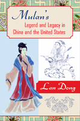

<body bgcolor="#FFFFFF" text="#000000" link="#0000FF" vlink="#CC0000" alink="#CC0000"><center><hr width="350" size="1" align="center" noshade>Heroic women warriors as reflections of social and moral values<hr width="350" size="1" align="center" noshade><p><a href="https://cdcshoppingcart.uchicago.edu/Cart/ChicagoBook.aspx?ISBN=9781592139705&&PRESS=temple" target="_top">Buy this book!</a> | <a href="https://cdcshoppingcart.uchicago.edu/Cart/Cart.aspx?PRESS=temple" target="_top">View Cart</a> | <a href="https://cdcshoppingcart.uchicago.edu/Cart/Cart.aspx?PRESS=temple" target="_top">Check Out</a></p><p></p></center><!--none//--><h1>Mulan's Legend and Legacy in China and the United States</h1>
<h3>Lan Dong</h3>
<P>cloth 1-59213-970-1 $75.50, Nov 10, <FONT COLOR=#990033>Available</FONT>
<br>paper 1-59213-971-X $30.95, Nov 10, <FONT COLOR=#990033>Available</FONT>
<br>Electronic Book 1-59213-972-8 $30.95 <FONT COLOR=#990033>Available</FONT>
<BR> 280 pp
6x9
1&nbsp;map(s) 1&nbsp;figure 26&nbsp;halftones
</P><BLOCKQUOTE><I>"Dong has convinced me: She is the world's authority on iterations of Mulan. She does a meticulous and scholarly job of finding and outlining versions of Mulan between the ‘Ballad,’ Kingston's, and Disney's. The chapters are a great pleasure to read and bold in their argumentation . Dong performs brilliant close-readings of texts that clearly benefit from her unique and comprehensive knowledge of Mulan tales. This book makes a unique contribution to Asian, Asian American, and American studies, and it reads like a labor of true scholarly love. Bravo!"</i>
<br><b>&#151Floyd Cheung</b>, Smith College</I></BLOCKQUOTE>
<p>Mulan, the warrior maiden who performed heroic deeds in battle while dressed as a male soldier, has had many incarnations from her first appearance as a heroine in an ancient Chinese folk ballad. Mulan’s story was retold for centuries, extolling the filial virtue of the young woman who placed her father's honor and well-being above her own. With the publication of Maxine Hong Kingston’s <em>The Woman Warrior</em> in the late 1970s, Mulan first became familiar to American audiences who were fascinated with the extraordinary Asian American character. Mulan’s story was recast yet again in the popular 1998 animated Disney film and its sequel.
</p><p>
In <em>Mulan’s Legend and Legacy in China and the United States</em>, Lan Dong traces the development of this popular icon and asks, &quot;Who is the real Mulan?&quot; and &quot;What does authenticity mean for the critic looking at this story?&quot; Dong charts this character’s literary voyage across historical and geographical borders, discussing the narratives and images of Mulan over a long time span&mdash;from premodern China to the contemporary United States to Mulan’s counter-migration back to her homeland.
</p><p>
As Dong shows, Mulan has been reinvented repeatedly in both China and the United States so that her character represents different agendas in each retelling&mdash;especially after she reached the western hemisphere. The dutiful and loyal daughter, the fierce, pregnant warrior, and the feisty teenaged heroine&mdash;each is Mulan representing an idea about female virtue at a particular time and place.
</p>
<BR>&nbsp;<h2>Excerpt</h2><P>Excerpt available at <a href="http://www.temple.edu/tempress">www.temple.edu/tempress</a></p>
<BR>&nbsp;<h2>Reviews</h2>
<p><I>"Dong's engagement with probably the most emblematic figure in Asian American literature is timely and admirable. She provides a comprehensive account of the historical presence of the Mulan legend/Ballad in Chinese literature and a compelling discussion of the ways the story has evolved using a wealth of archival data on the legend through the centuries."</I>
<br>&#151<b>Rocio G. Davis</b>, City University of Hong Kong
<p><i>"This detailed, exhaustive exploration of Mulan's story from its earliest beginnings to its modern incarnations is essential to anyone interested in cross-cultural children's literature, Asian studies, and modern popular culture. With a lengthy bibliography that includes Chinese sources, it lights the way for future scholarship, and belongs in most academic libraries, especially where children's literature is studied." </i> <br><b>&#151<i>Children's Literature Association Quarterly</i></b>
<p><i>"Scholars interested in the cross-cultural mutations of folktales as well as the surrounding cultural contexts that inform such iterations will find Dong's investigations fascinating."</i> <br><b>&#151<i>The Bulletin of the Center for Children's Books</i></b>
<p><i>"[C]ompelling.... In mapping the convoluted trajectory of the Mulan figure, this book adds significantly to transnational American studies by showing the necessity of knowledges of both American and Chinese cultures for the hybrid figure."</i> <br><b>&#151<i>American Studies</i></b>
<BR>&nbsp;<h2>Contents</h2><P>
<p>List of Figures
<br>Acknowledgments
<br>1. Prologue
<br>2. Heroic Lineage: Military Women and Lady Knights-Errant in Premodern China
<br>3. From a Courageous Maiden in Legend to a Virtuous Icon in History
<br>4. The White Tiger Mythology: A Woman Warrior’s Autobiography
<br>5. One Heroine, Many Characters: Mulan in American Picture Books
<br>6. Of Animation and Mulan’s International Fame
<br>7. Epilogue
<br>Appendix
<br>Notes
<br>Bibliography
<br>Index
</P><BR>&nbsp;<H2>About the Author(s)</H2>
<P><b>Lan Dong</b> is Assistant Professor of English at the University of Illinois at Springfield.</P>
<BR><H2>Subject Categories</H2>
<p><A HREF="/tempress/literature.html" TARGET="_top">Literature and Drama</a>
<BR><A HREF="/tempress/asian_amer.html" TARGET="_top">Asian American Studies</a>
<BR><A HREF="/tempress/asian.html" TARGET="_top">Asian Studies</a>
</p>
<p align="center"><a href="https://cdcshoppingcart.uchicago.edu/Cart/ChicagoBook.aspx?ISBN=9781592139705&&PRESS=temple" target="_top">Buy this book!</a> | <a href="https://cdcshoppingcart.uchicago.edu/Cart/Cart.aspx?PRESS=temple" target="_top">View Cart</a> | <a href="https://cdcshoppingcart.uchicago.edu/Cart/Cart.aspx?PRESS=temple" target="_top">Check Out</a></p><p><font face="Arial" size="1"><a href="copyright.html" onMouseOver="window.status='Web Copyright Policy';return true;" onMouseOut="window.status=''" title="Web Copyright Policy">&copy;</a> 2015 <a href="http://www.temple.edu" target="new" onMouseOver="window.status='Link to Temple University home page';return true;" onMouseOut="window.status=''" title="Link to Temple University home page">Temple University</a>. All Rights Reserved. http://www.temple.edu/tempress/titles/2009_reg.html</font></p>